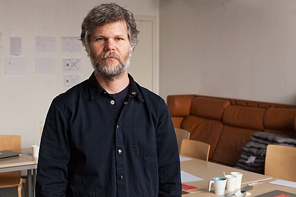

Biografía
Casey Edwin Barker Reas nació en 1972 en Troy, Ohio,Estados Unidos.
Estudió diseño en la Universidad de Cincinnati y luego pasó los siguientes dos años desarrollando software y electrónica como una exploración artística.
Conocido también como CEB Reas o Casey Reas, es un artista cuyas obras conceptuales, procedimentales y minimalistas exploran ideas a través de la perspectiva contemporánea del software.

Trayectoria y contribuciones
Casey Reas desarrolló su formación en diseño y medios digitales, consolidando una carrera que combina investigación, producción artística y docencia.
Es ampliamente conocido por ser co-creador del lenguaje de programación Processing, junto a Ben Fry, una herramienta fundamental para artistas y diseñadores que trabajan con código.
A lo largo de su trayectoria, su obra ha sido exhibida en museos, galerías y festivales internacionales.
Sus proyectos exploran tanto sistemas digitales como su materialización en formatos físicos, ampliando las posibilidades del arte generativo.
Su influencia se extiende también al ámbito educativo, donde ha contribuido a formar nuevas generaciones de artistas y desarrolladores.
Su trabajo ha sido clave para establecer un puente entre el arte, el diseño y la programación.

El código como sistema visual
El enfoque de Casey Reas se basa en la creación de instrucciones que definen comportamientos visuales.
En lugar de diseñar una imagen de forma directa, desarrolla algoritmos que determinan cómo los elementos se relacionan, se mueven y evolucionan en el tiempo.
Este método convierte al código en el núcleo del proceso creativo.
A partir de reglas simples, sus sistemas pueden generar resultados complejos e impredecibles.
Esta lógica permite explorar la emergencia, donde patrones y formas surgen de la interacción entre componentes.
El resultado es una obra que no está completamente controlada, sino que se desarrolla dentro de un marco definido.